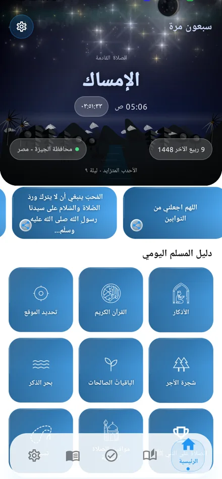
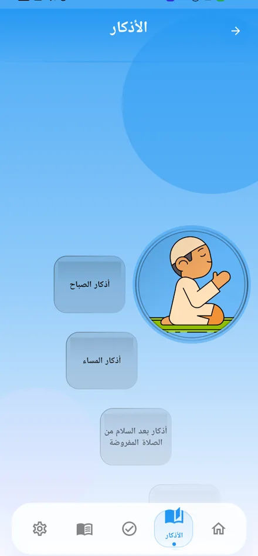
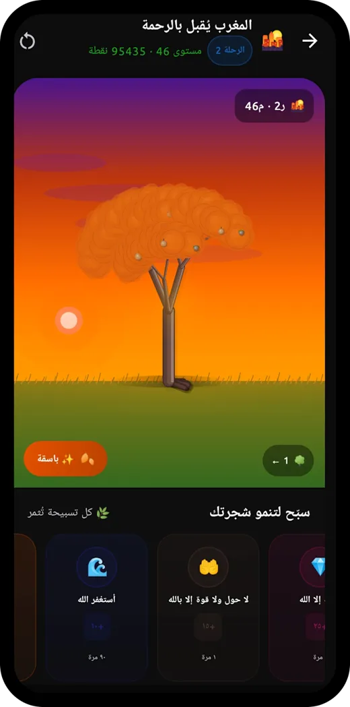
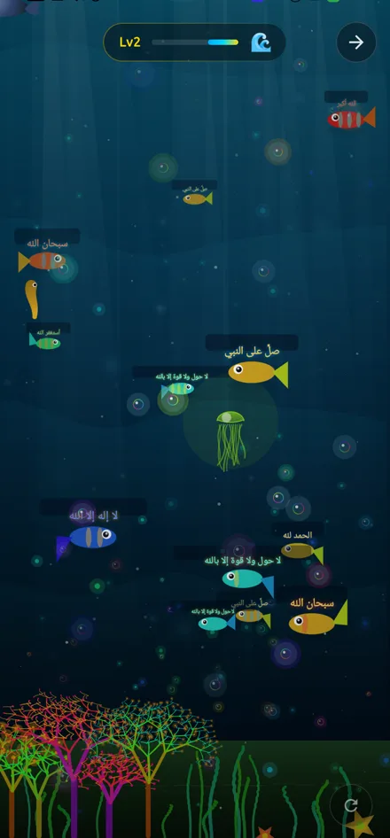
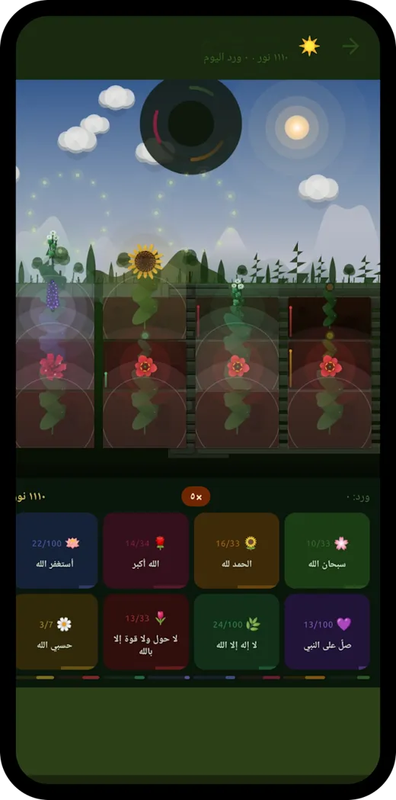
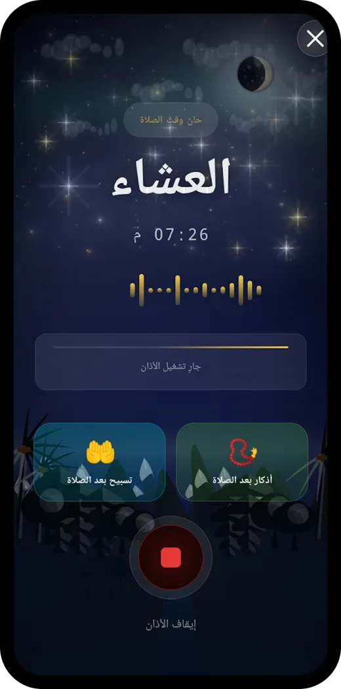
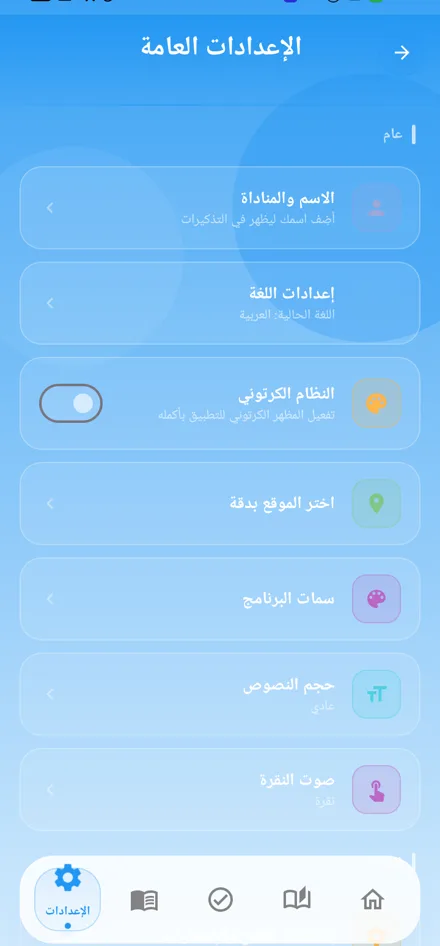
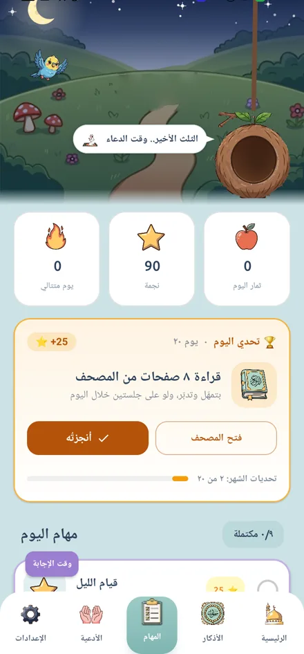

سبعون مرة — Seventy Times
تطبيق أذكار ومواقيت صلاة، بيحوّل عدّاد التسبيح الجاف لتجربة بتنمو مع المستخدم.
المشكلة
تطبيقات الأذكار كلها بتقدّم نفس الحاجة: قايمة نصوص وعدّاد. الناس بتنزّلها وتسيبها بعد أسبوع، لأن مفيش حاجة بتخلّي الرجوع ليها يستاهل. السؤال مكانش «إزاي أعرض الأذكار» — كان «إيه اللي يخلّي حد يفتح التطبيق بكرة كمان».
اللي بنيته
- تلات أنظمة ذكر تفاعلية بدل العدّاد. شجرة الأجر بتبدأ ثمرة صغيرة وتكبر على مراحل ومستويات لحد الشجرة الذهبية، وروضة الذاكرين ورد بيتفتّح مع كل ذكر وكل ذكر ليه عدّاده ومضاعِفه، وبحر الذكر كل سمكة فيه ذكر بيختفي مع اللمس. العدّاد بقى تقدّم مرئي، مش رقم.
- مواقيت صلاة محسوبة من موقع الجهاز، مع اختيار صوت الأذان لكل الصلوات أو للفجر وحده، وعرض مواقيت الشهر كامل للتخطيط، وتقويم هجري متزامن تلقائياً مع الميلادي.
- المستخدم هو اللي يقرر شكل الأذان. إشعار هادي في الشريط من غير مقاطعة، أو شاشة كاملة فيها موجة الصوت وطريق مباشر للتسبيح والأذكار بعد الصلاة. الاختيار بيتحفظ وأي تغيير بيطبّق من الصلاة القادمة.
- منبّه فجر ما بيقفش بالضغط — لازم حركة فعلية أو خطوات من حساسات الجهاز عشان يسكت. وبوصلة قبلة بمؤشرات بصرية وصوتية عند ضبط الاتجاه.
- ودجت شاشة رئيسية مبنية بـ Glance، وتذكيرات خلفية بـ WorkManager: أذكار الصباح والمساء والنوم، صيام الاتنين والخميس والأيام البيض، الصلاة على النبي، والمناسبات الإسلامية.







↔ لقطات من التطبيق على جهاز حقيقي، ومن صفحته على Google Play · اسحب للباقي
الوضع الكرتوني — تطبيق تاني جوه التطبيق
زرار واحد في الإعدادات بيبدّل التطبيق كله لعالم كرتوني: شريط تنقل بأيقونات مرسومة، ومشهد مرج وشجرة بتنمو مع المهام المكتملة، وعصفور مرافق بيتكلم. مش ثيم ألوان — دي واجهة تانية بالكامل بتعرض نفس البيانات.
- سما بتعرف الوقت. اليوم متقسّم خمس فترات — صباح، ظهيرة، غروب، ليل، والثلث الأخير — والمشهد بيتابع الساعة كل دقيقة: الشمس بتعلى وأشعتها بتلف، الغروب بيلوّن المشهد كله برتقالي، والليل بيعتّم ويطلّع هلال ونجوم وشهاب. اللقطة اللي جنبك اتاخدت 1:20 بعد نص الليل، فالعصفور بيقول «الثلث الأخير.. وقت الدعاء».
- عصفور بيعبر السما. ٢٣ إطار رفرفة، وكل عبور بمعايير مختلفة: الاتجاه بيتبادل، والعمق بيربط الحجم بالارتفاع بالسرعة بالشفافية — القريب أكبر وأوطى وأسرع. بيتلوّن بإضاءة الفترة، وبيقف رفرفة وهو بره الكادر.
- ترتيب ذكي للمهام. مهمة الفترة الحالية بتصعد لأول القائمة بحدود نابضة وشارة («وقتها الآن» / «قبل النوم» / «وقت الإجابة»)، والمكتملة بتنزل لآخرها لوحدها.
- احتفال مرسوم بالكود. عند إنهاء المهمة السادسة بتظهر شاشة احتفال مرسومة بالكامل بـ Canvas — كأس ذهبي بيدخل بـ spring، وأشعة دوّارة، و٩٠ قصاصة كونفيتي بفيزياء خفيفة بتقف لوحدها بعد ثوانٍ للأداء. مفيش صورة شاشة كاملة في أي منها.
- قرار تصميمي مكتوب: الإشعارات المنبثقة عند كل مهمة اتشالت بالكامل. رد الفعل الوحيد بقى نمو الشجرة، والاحتفال بيظهر عند 6/6 بس — لأن المقاطعة كل مهمة كانت بتكسر الإحساس اللي التطبيق كله مبني عليه.

↕ بدّل بين الوضعين — نفس الشاشات، من نفس الجهاز، في نفس اللحظة
بعدين
بدأت نسخة Kotlin Multiplatform من التطبيق: المنطق والحسابات والشبكة و Room في موديول shared، وواجهة Compose Multiplatform مشتركة، والكود الأندرويدي البحت (الأذان والودجت والـ services) متعزول في موديول لوحده. الاتجاه دايماً واحد ومفيش عكس. النسخة القديمة هي اللي لسه بتطلّع إصدارات Play لحد ما الجديدة توصل لنفس المستوى — ومكتوب في التوثيق إن أول تأكيد إن iOS بيبني هيكون على ماك، لأن Kotlin/Native مش بيتبني من ويندوز.